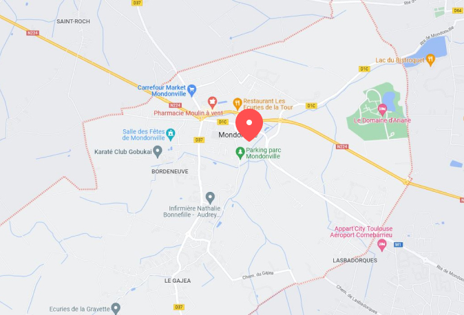

Cassandra BLONDEZ
Depuis de nombreuses années je suis passionnée par pleins de choses et mon plus gros challenge est d'arriver à conscillier toutes mes passions pour en faire un seul et même métier de rêve. Mais ça n'existe pas, du moins c'est ce que je croyais.
J'ai d'abord obtenue une maîtirise en psychologie clinique de la santé et psychopahtologie (oui ça parrait compliqué comme ça donc j'écris tout l'intitulé), j'ai ensuite suivie une formation avec OpenClassrooms pour apprendre l'UX/UI Design où j'ai pu exercer en freelance pendant 2 ans. Mais ma soif d'apprendre ne s'arrête pas là puisque depuis le 14 novembre je me suis lancée dans la grande expédition de la Wild Code School pour apprendre le developpement Web !
Hard skills
- Design d'interface
- HTML / CSS
- JavaScript
Soft skills
- Empathie
- Esprit d'équipe
- Créativité
Professionnels
Après ma formation à la Wild j'aimerais trouver un stage dans le développement web, dans une petite entreprise ou une startup pour approfondir mes connaissances et continuer à me former avec d'autres professionnels.
Par la suite j'aimerais intégrer une équipe en CDI, dans l'idéal dans un secteur qui me tiens à cœur comme la santé ou l'environnement. Dans mon emploi idéal je pourrais à la fois exprimer ma créativité dans le Design d'interface et également dans le code.
Mes réseaux
Où me trouver ?
Mondonville - Toulouse
Le reste de la team